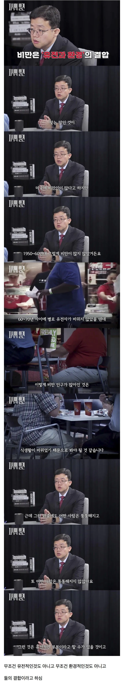

유전탓하면서 자기가 살찌는건 어쩔수 없는거라 합리화하는 사람들 꽤 많던데, 정말 유전적으로 살못빼는 사람 비율은 저 아구통 박사 처럼 많아봐야 진짜 살찐사람 중에 열에 셋, 적으면 명에 한두명 정도로 일것 같음

유전탓하면서 자기가 살찌는건 어쩔수 없는거라 합리화하는 사람들 꽤 많던데, 정말 유전적으로 살못빼는 사람 비율은 저 아구통 박사 처럼 많아봐야 진짜 살찐사람 중에 열에 셋, 적으면 명에 한두명 정도로 일것 같음
요즘 렉카는 지들 하고 싶은 말을 퍼와서 대신 하는거 왜 이리 많아졌냐 렉카면 렉카답게 사족 달지 말고 퍼오기만 하던가
나도 탄수화물의 축복을 받은 몸이고 싶다
옛날에 비해서 당분이 너무 많이 들어가고 건강에 안 좋은 합성식품들이 ㅈㄴ 늘어나긴 했으니까
비만이 질병이면 가난도 질병이다
유전과 환경의 결합이라는게 별게 아니라 유전적으로 살이 잘 찌는 체질 혹은 유전적으로 먹는거좋아하고 식욕을 참을수 없는 형질 혹은 둘다 여기에 먹고싶은걸 저렴하고 손쉽게 먹을수 있는 환경이 더해지면 비만이 나오는거지
거기에 신체적인 변화까지 더해지면 마른사람도 언제 살찔지 모르는일임 나도20대 후반까지 179에 70kg 후반 유지였는데 지금은 100kg 찍었다 그때는 아무 운동도안하고 먹고싶은거 다 먹었는데도 70후반대였고 지금은 먹고싶는거 참아가면서 더 움직이려고 하는데도 100kg야
물론 식이조절도 더 하고 운동도 더 빡세게 하면 살도 빠지겠지만 마라톤 아무나 못하는것처럼 그렇게 빡센 관리가 아무나 쉽게되는게아님 그걸 도와주는게 마운자로 위고비고
정작 아구통 교수는 너처럼 비만에대해 쉽게 말하는 애들을 돌려버리고 싶다는데
과학이랑 기싸움하는 새끼들
디스크같은거 터져서 스테로이드 들어가봐야
아 시발 살이 내맘대로 안되는거구나 하지
통증이 있는것일뿐 운동신경 자체가 마비되거나 척수가 끊긴게 아니니 강철같은 의지로 이겨내면 사뿐!
지능이 낮으면 저 말을 이렇게 해석할 수도 있구나. 정말 놀랍네..
ㄹㅇ 지능문제인듯하다
쟤는 우울증도 유전과 환경의 결합이다라고 하면, "아 우울증도 유전인 사람은 소수라고 하더라!! 정신과약 끊고 밖에 나가서 건강하게 산책 좀 해라"라고 할듯...ㅋㅋㅋㅋㅋ
진짜 저 말을 저렇게 해석해서 순간 무슨 소리지? 했어요ㅋㅋㅋ

비만은 그냥 생각 문제 맞지. 조절 장애 이전에 사회적으로 음식은 조절해서 먹는게 보편화 되어있었으면 비만도 그렇게 많진 않을거임. 근데 그런 사회에 살지 않았으니 고칠 수 없는 것처럼 보일 뿐.
난 췌장 문제라고봄
췌장이 한국인만했으면 고도비만인 사람은 일찍뒤져서 고도비만율이 내려갔을거임
친가에 살찐사람없음 외가에 살찐사람 없음 나도 30까지 빼빼말랐음. 와이프랑 연애때 와이프따라 억지로 먹으니 살 존나찜ㅋㅋ 그냥 우리가족이 안먹어서 안찐거였음ㅋㅋ 환경이 안먹는 환경이면 살이 찔수가 없긴함ㅋㅋ 난 하루 한끼먹는게 당연했는데 와이프만나서 매일 3끼+술안주 먹으니 졸라찜ㅋ 하두 갑자기 살이찌니까 살이 트더라ㅋㅋ
소아비만은 진짜 아동학대라고본다 적어도 성인되기 전까지는 부모가 관리해서 평범한 체격으로 살게 해야지 뚱땡이로 고점 높여놔서 평생 돼지로 살게하는건 부모자격 상실임
노력부족 의지부족이 참 인정하기 힘든 말이긴함
또 싸우네 이새끼들은 대충 살어 그냥 어차피 나이 먹으면 살려고 운동하게 돼
꿀꿀이 돼지들은 자기합리화 개심함
아구통 의사가 하는 말 중 필요한것만 딱 골라와서 옳소! 옳소! 외치고, 조금이라도 언짢은 대사는 바로 스킵함ㅋㅋㅋㅋㅋㅋ
지가 입에 넣어서 쳐먹어놓고 살찐건 남탓?
분노조절장애같은거지
진짜 장애(=유전)가 있어서 총맞으면서도 달려드는 찐 분조장은 물론 있지만 대부분은 지 불리할때 겸손해지잖음
비만도 진짜 호르몬문제나 갑상선암 등 질병문제로 비만도 있겠지만 대부분은 그냥 먹고싶은만큼 쳐먹어서임
내가 몸무게 오라가락 15키로를 왔다갔다 하는데 솔직히 걍 내 의지문제더라
봉인풀고 원없이 쳐먹겠다 선언하고 몇 달 먹으니까 인생 최대 몸무게 갱신하고 어느날 샤워하다가 몸 꼬라지보고 이제 좀 관리해야 겠다 싶으면 하루 1500~1800칼로리 제한하고 하루 30분이라도 헬스장 가서 지랄하면 반년정도면 복구하고 그럼
저 말을 저렇게 해석하는건 진짜 지능이슈인데....
멍청한 애들이 스피커를 얻으니까 진짜 별별 꼴이 다 튀어나오는구나ㅎㅎ
ㅋㅋㅋㅋㅋㅋㅋㅋ 여기도 존나많음 아구통을 돌려야되는데
아구통교수는 타고난 비만인이아니야
그냥 나이먹으면서 생활습관이 안좋아서 비만이 된사람이지
타고난 비만인은 엄마가 임신중에 먹는것부터 다름
식욕이 얼마나 센지 겪어보지도 못하고 나불대는거 진짜 역겨움 ㅋㅋㅋ 딱 자기수준, 자기경험 테두리 안에서 그게 왜안돼? 이지랄 떠는거 진짜 멍청하고 한심한데.
마운자로 맞아보면 아니시발 이 욕구가 이렇게 조절되는거였어?! 싶어진다. 말라깽이들은 음식을 이렇게 섭취하는건가 생각듦. 돼지들이 어떤 심리에 지배당하는지 겪어보질 않았으면 처 나불대지좀 말았으면;;; 의지지랄 떨지마라 20년핀담배 한컷에 끊엇다.
아니 군대만 갓다와도 세상에 이런새끼도 있다고??? 이런거 다 경험허고 나오지않나??
맨 앞은 그렇게 되는 가설 있대